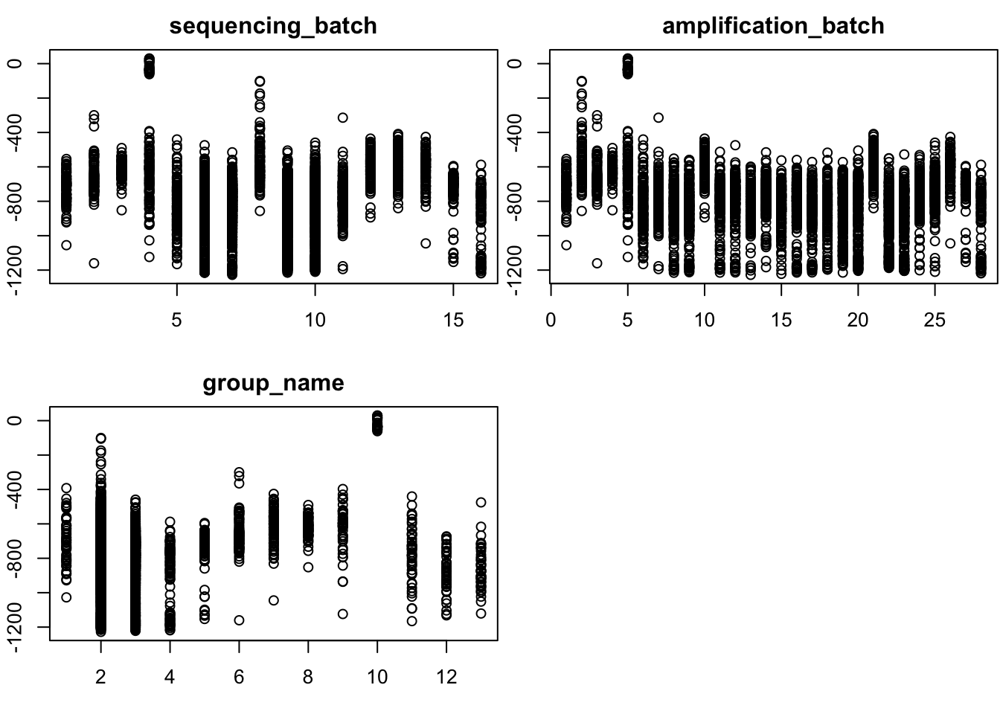
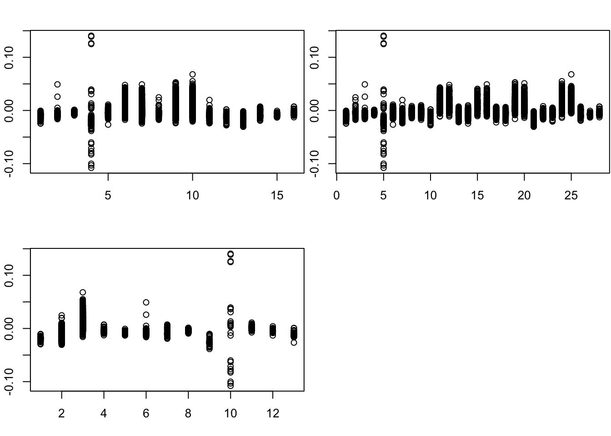

Mouse Spleen
Wei Wang
2017-02-17
Last updated: 2017-02-22
Code version: 2f3e52e
data
we load the data and exclude the ERCC genes
we also exclude the all zero columns and rows
devtools::install_github("jhsiao999/singleCellRNASeqMouseJaitinSpleen")
library(singleCellRNASeqMouseJaitinSpleen)
counts <- exprs(MouseJaitinSpleen)
cell_labels <- pData(MouseJaitinSpleen)
col_sum = colSums(counts)
row_sum = rowSums(counts)
col_index = which(col_sum != 0)
row_index = which(row_sum != 0)
# exclude the missing values
count_data = counts[row_index,col_index]
which_ercc <- grep("ERCC", rownames(count_data))
count_data = count_data[-which_ercc,]
dim(count_data)[1] 19473 4500Leading Factors of Missing pattern
we plot the first 5 factor (we get 14 factors in total and use the first 5 of them)
MissPattern = readRDS("~/HG/LogisticFlash_workflow/data/singelcell/MouseJatinspleen/logcpm_noERCC/MissPatternMouseJaitinSpleen_K20.rds")factor 1: total detected rate
factor 1 is mainly for the total detected rate
i = 1
par(mfrow = c(2,2), mar = c(5,4,4,2) - 1.9)
plot(as.numeric(as.factor(cell_labels$sequencing_batch[col_index])),MissPattern$f[,i],main = "sequencing_batch")
plot(as.numeric(as.factor(cell_labels$amplification_batch[col_index])),MissPattern$f[,i],main = "amplification_batch")
plot(as.numeric(as.factor(cell_labels$group_name[col_index])),MissPattern$f[,i],main = "group_name")
factor 2: hemato lineages
factor 2 is mianly for the hemato lineages
i = 2
par(mfrow = c(2,2), mar = c(5,4,4,2) - 1.9)
plot(as.numeric(as.factor(cell_labels$sequencing_batch[col_index])),MissPattern$f[,i],main = "sequencing_batch")
plot(as.numeric(as.factor(cell_labels$amplification_batch[col_index])),MissPattern$f[,i],main = "amplification_batch")
plot(as.numeric(as.factor(cell_labels$group_name[col_index])),MissPattern$f[,i],main = "group_name")
factor 3: amplification batch
factor 3 is for the amplification_batch
i = 3
par(mfrow = c(2,2), mar = c(5,4,4,2) - 1.9)
plot(as.numeric(as.factor(cell_labels$sequencing_batch[col_index])),MissPattern$f[,i],main = "sequencing_batch")
plot(as.numeric(as.factor(cell_labels$amplification_batch[col_index])),MissPattern$f[,i],main = "amplification_batch")
plot(as.numeric(as.factor(cell_labels$group_name[col_index])),MissPattern$f[,i],main = "group_name")factor 4,5
for(i in 4:5){
par(mfrow = c(2,2), mar = c(5,4,4,2) - 1.9)
plot(as.numeric(as.factor(cell_labels$sequencing_batch[col_index])),MissPattern$f[,i],main = "sequencing_batch")
plot(as.numeric(as.factor(cell_labels$amplification_batch[col_index])),MissPattern$f[,i],main = "amplification_batch")
plot(as.numeric(as.factor(cell_labels$group_name[col_index])),MissPattern$f[,i],main = "group_name")
}here, I check the factor values with excluding the:“CD11c+”, “CD11c+(2hr_LPS)”, “hemato lineages” (and “splenocyte”?)
library(ggplot2)Warning: package 'ggplot2' was built under R version 3.3.2# this is the plot index for the count_data
plot_index = which(cell_labels$group_name[col_index] %in% as.character(levels(factor(cell_labels$group_name)))[c(1,4,5,6,7,8,9,11,12)] )
plot_df = data.frame(MissPattern$f[plot_index,1:5])
colnames(plot_df) = c("f1","f2","f3","f4","f5")
# scatter plot
#plot(plot_df$f3,plot_df$f4)
#plot(plot_df$f3,plot_df$f5)
plot(plot_df$f4,plot_df$f5)which_list = list()
group_number = as.numeric(as.factor((cell_labels$group_name[col_index])[plot_index]))
levels(factor(cell_labels$group_name))[c(1,4,5,6,7,8,9,11,12)][1] "B cell" "CD8-CD4+ESAM+"
[3] "CD8-pDC" "CD8+CD86-"
[5] "CD8+CD86+" "CD8+pDC"
[7] "GC B cell" "monocyte_or_neutrophil"
[9] "NK_cell" p1 <- ggplot(plot_df, aes(f4, f5, label = (as.character(factor(group_number )) )), parse = FALSE)
p1 + geom_label(aes(fill = factor(group_number)), colour = "white", fontface = "bold")group_number_6 = group_number
group_number_6[which(group_number == 1 )] = 1
group_number_6[which(group_number == 7 )] = 1
group_number_6[which(group_number == 2 )] = 2
group_number_6[which(group_number == 4 )] = 3
group_number_6[which(group_number == 5 )] = 3
group_number_6[which(group_number == 3)] = 4
group_number_6[which(group_number == 6)] = 5
group_number_6[which(group_number == 8)] = 6
group_number_6[which(group_number == 9)] = 7
p2 <- ggplot(plot_df, aes(f4, f5, label = (as.character(factor(group_number_6)) )), parse = FALSE)
p2 + geom_label(aes(fill = factor(group_number_6)), colour = "white", fontface = "bold")- group 1: “B cell” “GC B cell”
- group 2: “CD8-CD4+ESAM+”
- group 3: “CD8+CD86-” “CD8+CD86+”
- group 4: “CD8-pDC”
- group 5: “CD8+pDC”
- group 6: “monocyte_or_neutrophil”
- group 7: “NK_cell”
bflash = readRDS("~/HG/LogisticFlash_workflow/data/singelcell/MouseJatinspleen/logcpm_noERCC/bflash.rds")
for(i in 1:9){
par(mfrow = c(2,2), mar = c(5,4,4,2) - 1.9)
plot(as.numeric(as.factor(cell_labels$sequencing_batch[col_index])),bflash$l[,i])
plot(as.numeric(as.factor(cell_labels$amplification_batch[col_index])),bflash$l[,i])
plot(as.numeric(as.factor(cell_labels$group_name[col_index])),bflash$l[,i])
}
par(mfrow = c(3,2),mar = c(5,4,4,2) - 1.8)
total_count = colSums(count_data)
for(i in 1:5) plot(total_count,MissPattern$f[,i],main = paste("factor",i,"vs total count"))## Session Information
sessionInfo()R version 3.3.0 (2016-05-03)
Platform: x86_64-apple-darwin13.4.0 (64-bit)
Running under: OS X 10.12.3 (unknown)
locale:
[1] en_US.UTF-8/en_US.UTF-8/en_US.UTF-8/C/en_US.UTF-8/en_US.UTF-8
attached base packages:
[1] stats graphics grDevices utils datasets methods base
other attached packages:
[1] ggplot2_2.2.1 workflowr_0.3.0 rmarkdown_1.3
loaded via a namespace (and not attached):
[1] Rcpp_0.12.9 assertthat_0.1 digest_0.6.12 rprojroot_1.2
[5] plyr_1.8.4 grid_3.3.0 gtable_0.2.0 backports_1.0.5
[9] git2r_0.18.0 magrittr_1.5 scales_0.4.1 evaluate_0.10
[13] stringi_1.1.2 lazyeval_0.2.0 labeling_0.3 tools_3.3.0
[17] stringr_1.1.0 munsell_0.4.3 yaml_2.1.14 colorspace_1.3-2
[21] htmltools_0.3.5 knitr_1.15.1 tibble_1.2 This R Markdown site was created with workflowr